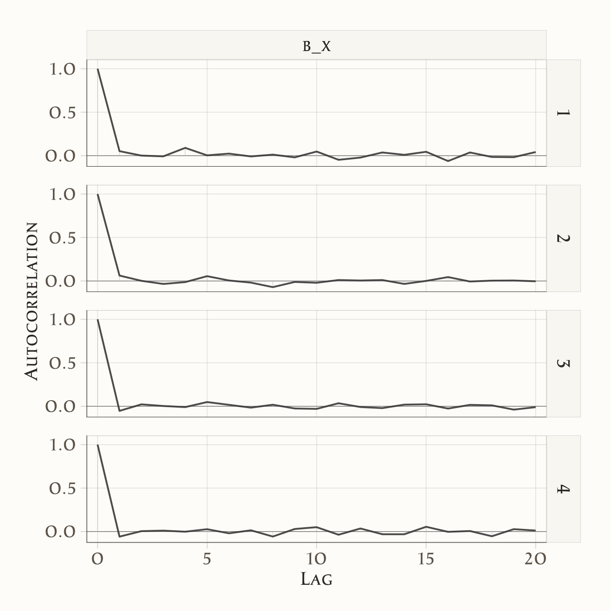
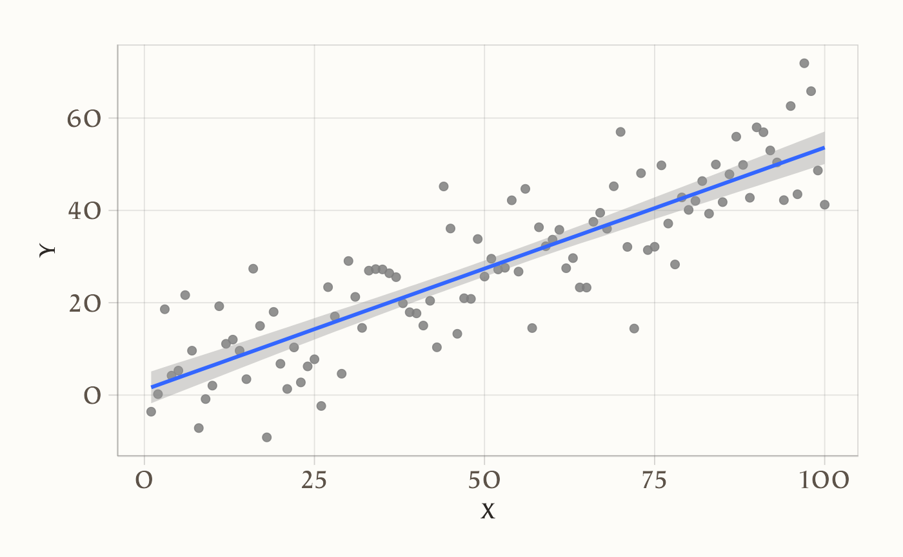

here::here("code", "_common.R") |>
source()
# Load packages
if (!requireNamespace("pacman")) install.packages("pacman")
pacman::p_load(cmdstanr, posterior, see, brms)27 Modello bayesiano di regressione lineare bivariata
Introduzione
Nei capitoli precedenti abbiamo visto come la regressione lineare bivariata, nell’ottica frequentista, consenta di stimare la relazione tra due variabili attraverso il metodo dei minimi quadrati. Questo approccio, pur efficace, presenta limiti evidenti: si fonda su test d’ipotesi e p-value, non permette di integrare conoscenza pregressa e offre solo una descrizione indiretta dell’incertezza sui parametri.
L’approccio bayesiano alla regressione propone una prospettiva diversa. L’idea centrale è la stessa che abbiamo incontrato in tutti i modelli precedenti: combiniamo un’informazione a priori con i dati osservati per ottenere una distribuzione a posteriori. In questo caso, i parametri della retta di regressione (intercetta, pendenza, varianza residua) non sono visti come valori fissi ma come quantità aleatorie, descritte da una distribuzione di probabilità.
Questa impostazione ci permette di:
- esprimere in modo esplicito le nostre convinzioni iniziali sui parametri;
- aggiornare tali convinzioni alla luce dei dati;
- quantificare l’incertezza residua attraverso distribuzioni a posteriori, anziché affidarsi a intervalli di confidenza o a test dicotomici.
In questo capitolo vedremo come specificare e stimare un modello bayesiano di regressione lineare bivariata, partendo da ipotesi semplici e confrontando i risultati con quelli ottenuti nell’approccio frequentista. Sarà l’occasione per evidenziare i punti di forza del quadro bayesiano e comprendere meglio come interpretare i coefficienti di regressione in termini probabilistici.
Panoramica del capitolo
- Comprendere il modello di regressione bayesiano e come si differenzia dall’approccio frequentista.
- Interpretare i parametri stimati in un contesto bayesiano e confrontarli con quelli frequentisti.
- Familiarizzare con l’uso di brms nella regressione.
- Interpretare le previsioni del modello bayesiano e le verifiche predittive a posteriori.
27.1 L’approccio bayesiano
Nella statistica frequentista, i parametri di un modello – come l’intercetta, la pendenza o la deviazione standard degli errori – vengono trattati come quantità fisse sebbene sconosciute. L’incertezza associata alle loro stime viene espressa indirettamente attraverso concetti quali intervalli di confidenza o valori-\(p\) nei test di ipotesi.
L’approccio bayesiano propone una prospettiva radicalmente diversa: i parametri sono considerati variabili aleatorie, ciascuna descritta da una propria distribuzione di probabilità. Questo framework consente di rappresentare l’incertezza in modo esplicito e diretto. Il processo inferenziale bayesiano si articola fondamentalmente in tre fasi.
La prima fase riguarda la scelta delle distribuzioni a priori. Prima di osservare i dati, viene assegnata a ciascun parametro una distribuzione di probabilità iniziale, detta prior, che incorpora ogni conoscenza preesistente o ipotesi plausibili sul fenomeno in studio. Ad esempio, se la letteratura scientifica suggerisce consistentemente che l’ansia riduca la performance, è possibile specificare un prior informativo per il coefficiente di regressione corrispondente, come una distribuzione normale centrata su un valore negativo con deviazione standard moderata, formalmente indicata come \(b \sim \mathcal{N}(-0.7, 0.3)\). Al contrario, in assenza di informazioni preliminari solide, si può ricorrere a un prior debole o vago, che esprima una grande incertezza iniziale. Un prior di questo tipo, ad esempio \(b \sim \mathcal{N}(0, 100)\), assegna probabilità pressoché uniformi a un ampio spettro di valori, permettendo ai dati osservati di dominare completamente la stima finale, che risulterà quindi molto vicina a quella ottenuta con metodi frequentisti.
La seconda fase consiste nell’aggiornamento delle credenze attraverso i dati osservati. Applicando il teorema di Bayes, le distribuzioni a priori vengono combinate con la verosimiglianza dei dati, dando origine alla distribuzione a posteriori dei parametri. Formalmente, questo si esprime attraverso la proporzionalità:
\[ P(a, b, \sigma \mid \text{dati}) \propto P(\text{dati} \mid a, b, \sigma) \cdot P(a, b, \sigma). \]
Il risultato di questo aggiornamento bayesiano è una distribuzione di probabilità congiunta per i parametri, che quantifica in modo probabilistico la plausibilità dei loro diversi valori, alla luce sia dell’evidenza empirica sia delle assunzioni iniziali.
La terza fase è dedicata all’interpretazione della distribuzione a posteriori. In questo approccio, non si ottiene un’unica stima puntuale per la retta di regressione, bensì un’intera famiglia di rette plausibili, ciascuna associata a un differente grado di credibilità probabilistica. L’incertezza viene sintetizzata e comunicata attraverso intervalli di credibilità. A differenza degli intervalli di confidenza di impostazione frequentista, un intervallo di credibilità bayesiano del 95% ammette un’interpretazione probabilistica diretta: esiste una probabilità del 95% che il vero valore del parametro sia contenuto al suo interno, dato il modello, i prior specificati e i dati osservati.
L’approccio bayesiano offre diversi vantaggi, sia di natura pratica che teorica. Permette l’integrazione formale di conoscenze pregresse, facilitando la cumulatività della ricerca, ad esempio attraverso l’incorporazione di risultati di meta-analisi in nuovi studi. Mostra una notevole robustezza in presenza di campioni di piccole dimensioni, poiché i prior svolgono una funzione di regolarizzazione che stabilizza le stime, mitigando il rischio di overfitting. Fornisce, infine, interpretazioni intuitive dell’incertezza, allineate al ragionamento probabilistico naturale. Per queste ragioni, la statistica bayesiana risulta particolarmente adatta alla ricerca psicologica, un campo che spesso deve operare con campioni limitati e nel quale i nuovi risultati devono essere costantemente integrati in un corpus di conoscenze in evoluzione.
27.2 Il modello di regressione lineare semplice
Per illustrare concretamente il modello di regressione lineare semplice, consideriamo un esempio di comune interesse in psicologia: prevedere il livello di ansia di un individuo (indicato con \(y\)) in base al numero di ore di sonno (indicato con \(x\)) da egli riportate. La relazione lineare tra queste due variabili viene formalizzata attraverso il modello:
\[ y_i = \beta_0 + \beta_1 x_i + \varepsilon_i, \] dove \(\beta_0\) rappresenta l’intercetta, ovvero il valore atteso della variabile ansia quando il numero di ore di sonno è pari a zero. Il parametro \(\beta_1\) è il coefficiente di regressione, che quantifica la variazione attesa nel livello di ansia per ogni ora aggiuntiva di sonno. Il termine \(\varepsilon_i\) costituisce l’errore casuale, capace di catturare la deviazione del punteggio osservato di ansia del singolo individuo rispetto al valore predetto dalla retta di regressione.
Un’assunzione fondamentale del modello riguarda proprio il termine di errore. Si assume che gli errori \(\varepsilon_i\) siano tra loro indipendenti e seguano una distribuzione normale con media zero e varianza costante \(\sigma^2\). Questa assunzione implica a sua volta che, per un dato valore di \(x\), i valori osservati della variabile \(y\) siano distribuiti normalmente attorno alla media condizionata \(\mu_i\). Formalmente:
\[ y_i \mid x_i \sim \mathcal{N}(\mu_i, \sigma^2), \quad \text{dove} \quad \mu_i = \beta_0 + \beta_1 x_i. \]
In termini sostanziali, il modello non presuppone che tutti gli individui con lo stesso numero di ore di sonno presentino un identico livello di ansia. Piuttosto, esso descrive come i loro punteggi si distribuiscano in modo aleatorio attorno a un valore medio, il quale è deterministicamente determinato dalla relazione lineare con la variabile esplicativa. La retta di regressione rappresenta dunque la tendenza centrale di questa relazione, mentre la variabilità residua attorno alla retta è attribuita a fattori non misurati o al caso.
27.2.1 Cos’è la verosimiglianza?
Il concetto di verosimiglianza rappresenta una misura fondamentale dell’adeguatezza di un insieme di parametri nel descrivere i dati osservati. Nel contesto della regressione lineare, la verosimiglianza dipende specificamente dai parametri β₀, β₁ e σ.
Per ciascuna osservazione yᵢ, la probabilità di osservare quel particolare dato è espressa dalla funzione di densità di una distribuzione normale. Supponendo l’indipendenza delle osservazioni, la verosimiglianza congiunta per l’intero campione si ottiene attraverso il prodotto delle densità individuali:
\[ \mathcal{L}(\beta_0, \beta_1, \sigma \mid \mathbf{y}, \mathbf{x}) = \prod_{i=1}^n \frac{1}{\sqrt{2\pi \sigma^2}} \exp\!\left(-\frac{(y_i - \beta_0 - \beta_1 x_i)^2}{2\sigma^2}\right). \]
Data la complessità computazionale che deriva dal lavorare con prodotti di molteplici termini, nella pratica statistica si ricorre frequentemente alla log-verosimiglianza. Questa trasformazione, mantenendo le proprietà di ottimizzazione della funzione originale, converte il prodotto in una somma, semplificando notevolmente i calcoli:
\[ \log \mathcal{L}(\beta_0, \beta_1, \sigma \mid \mathbf{y}, \mathbf{x}) = -\frac{n}{2}\log(2\pi) - n\log\sigma - \frac{1}{2\sigma^2}\sum_{i=1}^n (y_i - \beta_0 - \beta_1 x_i)^2. \]
27.2.1.1 Verosimiglianza: confronto tra approccio frequentista e bayesiano
Il ruolo della verosimiglianza assume significati differenti nei due paradigmi statistici principali. Nell’approccio frequentista, la procedura di stima si basa sull’identificazione dei valori parametrici che massimizzano la funzione di verosimiglianza, dando origine al metodo della massima verosimiglianza. Questi valori costituiscono le stime puntuali considerate ottimali per i parametri del modello.
Nell’approccio bayesiano, la verosimiglianza rappresenta soltanto uno dei componenti del processo inferenziale. Essa viene integrata con le distribuzioni a priori assegnate ai parametri, attraverso l’applicazione del teorema di Bayes. Questa combinazione produce la distribuzione a posteriori, che costituisce la base per tutte le inferenze successive, fornendo una rappresentazione completa dell’incertezza associata ai parametri del modello.
27.2.2 Le distribuzioni a priori
Un elemento caratterizzante dell’approccio bayesiano risiede nella specificazione delle distribuzioni a priori. Queste distribuzioni formalizzano matematicamente le credenze iniziali riguardo ai parametri del modello, prima di prendere in considerazione i dati osservati. È possibile identificare tre categorie principali di distribuzioni a priori.
Le distribuzioni non informative intendono rappresentare una situazione di massima ignoranza o neutralità iniziale. Il loro obiettivo è permettere ai dati osservati di determinare completamente le stime finali, senza esercitare alcuna influenza sostanziale. Un esempio tipico è una distribuzione normale con media zero e varianza molto ampia, come \(\mathcal{N}(0, 1000)\).
Le distribuzioni debolmente informative forniscono una regolarizzazione moderata, imponendo dei vincoli molto larghi ma in grado di evitare stime parametriche in regioni chiaramente implausibili o numericamente instabili. Questo tipo di prior può migliorare la stabilità delle stime, specialmente con campioni di piccole dimensioni, senza introdurre forti assunzioni sostanziali. Un esempio comune per un coefficiente di regressione potrebbe essere \(\mathcal{N}(0, 2.5)\).
Le distribuzioni informative incorporano in modo esplicito conoscenze provenienti da letteratura preesistente, teorie consolidate o esperienza empirica. Sono caratterizzate da una varianza ridotta, che riflette un grado di certezza iniziale più elevato. Il loro utilizzo può aumentare notevolmente l’efficienza dell’inferenza ma richiede una solida giustificazione teorica o empirica per la scelta dei loro iperparametri.
27.2.3 Le distribuzioni a posteriori
La distribuzione a posteriori rappresenta il risultato fondamentale dell’inferenza bayesiana. Essa sorge dalla combinazione di due componenti: la verosimiglianza, che quantifica l’informazione contenuta nei dati osservati in relazione ai parametri, e le distribuzioni a priori, che esprimono le credenze iniziali.
Questa distribuzione congiunta a posteriori costituisce una rappresentazione probabilistica completa e aggiornata della nostra conoscenza riguardo ai parametri, condizionata all’evidenza empirica. A differenza delle tradizionali stime puntuali dell’approccio frequentista, il risultato bayesiano fornisce un’intera distribuzione di probabilità per ogni parametro. Questa ricchezza di informazione permette di quantificare l’incertezza in modo diretto e intuitivo, facilitando la costruzione di intervalli di credibilità e supportando un processo decisionale che integra coerentemente tutte le fonti di informazione disponibili.
27.3 Implementazione con brms
Nel pacchetto brms (che usa Stan come motore di calcolo), non è necessario scrivere la funzione di verosimiglianza a mano. Basta specificare il modello nella classica forma di Wilkinson:
brm(y ~ x, data = dati)Questa notazione compatta definisce il modello di regressione, la verosimiglianza implicita e consente a brms di costruire automaticamente il modello bayesiano. Se non si specificano i prior, brms utilizza prior debolmente informativi di default.
27.3.1 Come vengono stimate le distribuzioni a posteriori?
Poiché la distribuzione a posteriori è spesso troppo complessa per essere calcolata esattamente, brms utilizza tecniche di campionamento numerico MCMC (Markov Chain Monte Carlo). In particolare, utilizza l’algoritmo NUTS (No-U-Turn Sampler), una variante evoluta dell’algoritmo di Metropolis-Hastings, che esplora lo spazio dei parametri in modo efficiente e adattivo. Grazie a questo, otteniamo campioni dalla distribuzione a posteriori, dai quali è possibile calcolare medie, intervalli di credibilità e fare previsioni.
In sintesi, il modello di regressione bayesiano consente di incorporare in modo trasparente incertezze, conoscenze pregresse e informazioni contenute nei dati. Rispetto all’approccio classico, non restituisce una singola stima puntuale ma un’intera distribuzione per ogni parametro. Questo permette inferenze più flessibili e più ricche di informazioni, particolarmente utili nelle scienze psicologiche, dove l’incertezza è la regola più che l’eccezione.
27.3.2 Un esempio concreto
Definiamo i parametri e simuliamo i dati.
set.seed(123)
# Definizione delle variabili
x <- 1:100
n <- length(x)
a <- 1.5
b <- 0.5
sigma <- 10
# Generazione di y
y <- a + b * x + rnorm(n, 0, sigma)
# Creazione del dataframe
fake <- tibble(x = x, y = y)
head(fake)
#> # A tibble: 6 × 2
#> x y
#> <int> <dbl>
#> 1 1 -3.60
#> 2 2 0.198
#> 3 3 18.6
#> 4 4 4.21
#> 5 5 5.29
#> 6 6 21.7Iniziamo adattando ai dati un modello frequentista:
fm1 <- lm(y ~ x, data = fake)summary(fm1)
#>
#> Call:
#> lm(formula = y ~ x, data = fake)
#>
#> Residuals:
#> Min 1Q Median 3Q Max
#> -24.536 -5.524 -0.346 6.485 20.949
#>
#> Coefficients:
#> Estimate Std. Error t value Pr(>|t|)
#> (Intercept) 1.1360 1.8429 0.62 0.54
#> x 0.5251 0.0317 16.57 <2e-16
#>
#> Residual standard error: 9.15 on 98 degrees of freedom
#> Multiple R-squared: 0.737, Adjusted R-squared: 0.734
#> F-statistic: 275 on 1 and 98 DF, p-value: <2e-16Per ottenere l’intervallo di confidenza (nel senso frequentista) della stima dei parametri usiamo:
confint(fm1, level = 0.95)
#> 2.5 % 97.5 %
#> (Intercept) -2.521 4.793
#> x 0.462 0.588Adattiamo ora ai dati un modello di regressione bayesiano utilizzando brms. Si noti che, anche in questo caso, usiamo la sintassi di Wilkinson y ~ x, come per lm(). Eseguiamo il campionamento:
fm2 <- brm(
y ~ x,
data = fake,
backend = "cmdstanr"
)Come discusso nell’analisi dell’algoritmo di Metropolis, il primo passo è esaminare le tracce dei parametri per verificare la convergenza dell’algoritmo. La convergenza può essere considerata raggiunta se le catene (nel caso di brm, sono 4 per impostazione predefinita) risultano ben mescolate. Questo si manifesta in un trace plot che mostra una distribuzione uniforme e casuale dei campioni attorno a un valore centrale, senza pattern evidenti o tendenze sistematiche.
Le tracce dei parametri si ottengono nel modo seguente:
Gli istogrammi delle distribuzioni a posteriori dei parametri si generano nel modo seguente:
Per valutare l’autocorrelazione tra i campioni a posteriori del parametro beta, possiamo utilizzare il seguente comando:
mcmc_acf(fm2, "b_x")
L’autocorrelazione fornisce informazioni sulla dipendenza tra campioni successivi nella catena di Markov. È normale che i campioni successivi non siano completamente indipendenti, poiché le catene di Markov generano campioni correlati per costruzione. Tuttavia, se l’algoritmo ha raggiunto la convergenza, l’autocorrelazione dovrebbe diminuire rapidamente e diventare trascurabile dopo un numero relativamente piccolo di lag. Questo significa che, dopo un certo numero di passi, i campioni diventano progressivamente meno correlati tra loro, comportandosi in modo simile a campioni indipendenti estratti dalla distribuzione target.
Un’elevata autocorrelazione su lag più lunghi potrebbe invece indicare problemi di mescolamento delle catene o una mancata convergenza, richiedendo ulteriori verifiche o aggiustamenti, come l’aumento del numero di iterazioni o una diversa parametrizzazione del modello.
Nel caso presente, notiamo una rapida diminuzione dell’autocorrelazione in funzione del numero di passi. Ciò è indicativo del fatto che la convergenza è stata raggiunta.
Una sintesi numerica dei risultati si trova nel modo seguente:
summary(fm2)
#> Family: gaussian
#> Links: mu = identity; sigma = identity
#> Formula: y ~ x
#> Data: fake (Number of observations: 100)
#> Draws: 4 chains, each with iter = 2000; warmup = 1000; thin = 1;
#> total post-warmup draws = 4000
#>
#> Regression Coefficients:
#> Estimate Est.Error l-95% CI u-95% CI Rhat Bulk_ESS Tail_ESS
#> Intercept 1.17 1.79 -2.34 4.64 1.00 3981 2679
#> x 0.52 0.03 0.46 0.59 1.00 4004 2919
#>
#> Further Distributional Parameters:
#> Estimate Est.Error l-95% CI u-95% CI Rhat Bulk_ESS Tail_ESS
#> sigma 9.24 0.68 8.02 10.71 1.00 3848 2991
#>
#> Draws were sampled using sample(hmc). For each parameter, Bulk_ESS
#> and Tail_ESS are effective sample size measures, and Rhat is the potential
#> scale reduction factor on split chains (at convergence, Rhat = 1).Confrontiamo le stime ottenute con i valori reali dei parametri simulati. L’intercetta è stata stimata attorno a 1.14, con un’incertezza al 95% che varia tra -2.4 e 4.8. Questo risultato rientra negli intervalli di credibilità previsti, confermando l’accuratezza del modello. Analogamente, per la pendenza \(b\), l’intervallo di credibilità al 95% include il valore reale simulato, dimostrando come le stime bayesiane riflettano accuratamente l’incertezza sui parametri.
Se si utilizza la funzione conditional_effects() viene prodotto un grafico che rappresenta la relazione stimata tra il predittore \(x\) e la variabile di risposta \(y\).
conditional_effects(fm2) |>
plot(points = TRUE)
-
Linea stimata (effetto medio):
- La linea centrale del grafico rappresenta il valore medio previsto di \(y\) per ogni valore di \(x\), dato dalla relazione \(y = \alpha + \beta x\).
- Questa linea è calcolata usando i valori medi a posteriori stimati per \(\alpha\) e \(\beta\).
-
Bande di incertezza (intervalli di credibilità):
- Le bande attorno alla linea rappresentano gli intervalli di credibilità (ad esempio, al 95%). Questi mostrano l’incertezza associata alle stime del modello per ogni valore di \(x\).
- Più strette sono le bande, maggiore è la certezza del modello riguardo alla relazione stimata.
-
Dati osservati:
- I punti rappresentano i valori effettivi di \(y\) osservati nei dati. Questo consente di confrontare visivamente come i dati reali si allineano con le previsioni del modello.
Il grafico consente
- una verifica visiva della relazione stimata tra \(y\) e \(x\);
- di identificazione di eventuali discrepanze tra i dati osservati e le previsioni del modello;
- una rappresentazione dell’incertezza nelle stime.
Ad esempio, il grafico può mostrare se \(x\) ha un effetto credibile su \(y\) e con quale livello di incertezza. Se l’effetto di \(x\) è debole o nullo, la linea stimata sarà piatta (vicina a zero) e le bande di incertezza saranno ampie.
27.4 Simulazione di livelli di copertura
Verifichiamo la copertura degli intervalli di credibilità al 95% attraverso simulazioni ripetute.
set.seed(42)
# Parametri veri
a_true <- 0.2
b_true <- 0.3
sigma_true <- 0.5
# Numero di simulazioni
num_simulations <- 100
# Conteggio delle coperture
coverage_a <- 0
coverage_b <- 0
for (i in 1:num_simulations) {
# Generazione dei dati
x <- 1:20
y <- a_true + b_true * x + sigma_true * rnorm(length(x))
# Adattamento del modello
fit <- lm(y ~ x)
ci <- confint(fit) # Intervalli di confidenza
# Verifica delle coperture
if (ci[1,1] <= a_true & ci[1, 2] >= a_true) {
coverage_a <- coverage_a + 1
}
if (ci[2,1] <= b_true & ci[2, 2] >= b_true) {
coverage_b <- coverage_b + 1
}
}I risultati indicano che i livelli di copertura empirici ottenuti con l’approccio frequentista corrispondono strettamente ai livelli teorici attesi.
Per proseguire, ripeteremo la simulazione adottando un approccio bayesiano. Useremo la funzione brm() del pacchetto brms al posto di lm().
#| message: false
#| warning: false
#| output: false
#|
set.seed(23)
n_fake <- 100
cover_68 <- logical(n_fake)
cover_95 <- logical(n_fake)
# Veri parametri
a <- 0.2 # intercetta vera
b <- 0.3 # pendenza vera
sigma <- 0.5 # deviazione standard vera
x <- 1:20
n <- length(x)
# Priors con set_prior
priors <- c(
set_prior("normal(0, 2.5)", class = "Intercept"),
set_prior("normal(0, 2.5)", class = "b", coef = "x"),
set_prior("cauchy(0, 2.5)", class = "sigma")
)
set.seed(23)
n_fake <- 1000
cover_68 <- logical(n_fake)
cover_95 <- logical(n_fake)
a <- 0.2
b <- 0.3
sigma <- 0.5
x <- 1:20
n <- length(x)
for (s in seq_len(n_fake)) {
y <- a + b * x + rnorm(n, 0, sigma)
fake <- data.frame(x = x, y = y)
fit <- brm(
y ~ 1 + x,
data = fake,
family = gaussian(),
prior = priors,
iter = 2000,
chains = 2,
refresh = 0,
backend = "cmdstanr"
)
post <- summary(fit)$fixed
b_hat <- post["x", "Estimate"]
b_se <- post["x", "Est.Error"]
cover_68[s] <- abs(b - b_hat) < b_se
cover_95[s] <- abs(b - b_hat) < 2 * b_se
}
cat("Coverage 68%:", mean(cover_68), "\n")
cat("Coverage 95%:", mean(cover_95), "\n")Con solo 100 iterazioni, i risultati sono i seguenti:
> cat("Coverage 68%:", mean(cover_68), "\n")
Coverage 68%: 0.73
> cat("Coverage 95%:", mean(cover_95), "\n")
Coverage 95%: 0.953 Questa seconda simulazione evidenzia che anche i livelli di copertura empirici ottenuti con l’approccio bayesiano si avvicinano ai valori teorici previsti.
I risultati ottenuti confermano l’efficacia degli intervalli di confidenza e di credibilità stimati attraverso i modelli frequentisti e bayesiani.
27.5 Confronti, non effetti
Gelman et al. (2021) mettono in guardia contro un’interpretazione eccessivamente causale dei coefficienti di regressione. Sebbene nella pratica statistica sia comune riferirsi a questi coefficienti come “effetti”, tale terminologia può risultare fuorviante poiché suggerisce implicitamente l’esistenza di un nesso causale. In realtà, ciò che un modello di regressione stima rappresenta fondamentalmente un pattern osservazionale. Più precisamente, il coefficiente β₁ associato a una variabile esplicativa X cattura la differenza attesa nella media della variabile dipendente Y tra due sottopopolazioni che differiscono di un’unità nel valore di X.
La regressione lineare è essenzialmente uno strumento matematico progettato per analizzare associazioni e migliorare la capacità predittiva. I suoi coefficienti vanno interpretati primariamente come confronti medi tra gruppi definiti dai valori delle variabili esplicative. Un’interpretazione causale di questi coefficienti è legittima soltanto in contesti sperimentali specifici o quando il disegno di ricerca incorpora strategie identificative appropriate, come l’utilizzo di variabili strumentali, regression discontinuity design o altri metodi che mirano a controllare la confondazione. Tale interpretazione non può mai essere dedotta automaticamente dalla stima del modello statistico, ma deve essere giustificata da considerazioni metodologiche sostanziali relative al processo di generazione dei dati.
Riflessioni conclusive
In questo capitolo abbiamo riformulato la regressione lineare bivariata in chiave bayesiana. Abbiamo visto come l’adozione di distribuzioni a priori per i parametri — intercetta, pendenza e varianza residua — permetta di combinare conoscenze pregresse con i dati osservati, producendo distribuzioni a posteriori che rappresentano in modo diretto l’incertezza sulle quantità di interesse.
Il confronto con l’approccio frequentista mette in luce differenze sostanziali. Mentre il frequentismo si concentra su stime puntuali, intervalli di confidenza e test di ipotesi, il bayesianesimo restituisce l’intera distribuzione di probabilità dei parametri, consentendo affermazioni più trasparenti e interpretabili. In questo quadro, parlare della “plausibilità” di un coefficiente, o della probabilità che una pendenza sia positiva o negativa, non è più un abuso di linguaggio ma il cuore stesso dell’inferenza.
Naturalmente, il prezzo da pagare è quello computazionale. Le soluzioni analitiche sono disponibili solo in casi semplici, come il modello qui discusso. Nei problemi reali, con più predittori o con strutture di dati complesse, dobbiamo ricorrere a metodi di approssimazione numerica. È qui che entrano in gioco i metodi di campionamento e gli strumenti software sviluppati negli ultimi decenni.
Nei prossimi capitoli introdurremo quindi Stan, un linguaggio di programmazione pensato per la stima di modelli bayesiani complessi, che automatizza i passaggi computazionali e rende accessibile l’inferenza anche in situazioni dove il calcolo diretto sarebbe impossibile. La regressione bivariata diventa così il banco di prova ideale per comprendere la logica bayesiana prima di affrontare modelli più ricchi e realistici.
Bibliografia
Gelman, A., Hill, J., & Vehtari, A. (2021). Regression and other stories. Cambridge University Press.
Johnson, A. A., Ott, M., & Dogucu, M. (2022). Bayes Rules! An Introduction to Bayesian Modeling with R. CRC Press.